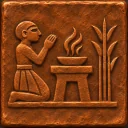

МЕЖДУ ДВУХ РЕК
◉ ЭРИДУ · НИЖНЯЯ ДОЛИНАДолина первых огней
✥СЕВЕР
Улицы оживаютРаботники несут первые грузы
☀ Тёплый ветер с реки
0°
Выбери постройку слева или прикоснись к городу

НОВЫЙ ВАВИЛОНИ М Е Н А Б О Г О ВИГРА О ГОРОДЕ И ЕГО БОГЕ · ПЕРВАЯ ЭПОХА